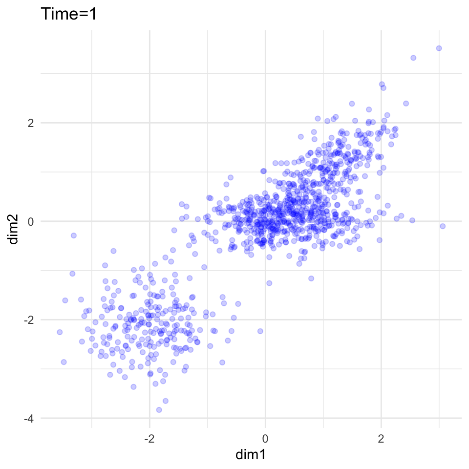

3 2d data
3.1 Generating 2d data
#' Generates some synthetic 2-dimensional data with three clusters.
#'
#' @param TT Number of time points.
#' @param nt Number of particles at each time.
#'
#' @return List containing (1) ylist, (2) mnlist, (3) clusterlist.
#' @export
gendat_2d <- function(TT, ntlist){
## Basic checks
stopifnot(length(ntlist) == TT)
## Make cluster probabilities, by time
cluster_prob1 = sapply(1:TT, function(tt) sin(tt/24 * 2 * pi)/3 + 1 + (tt/TT)*5)
cluster_prob2 = sapply(1:TT, function(tt) cos(tt/24 * 2 * pi)/3 + 8 - (tt/TT)*5)
cluster_prob3 = rep(3, TT)
probs = cbind(cluster_prob1, cluster_prob2, cluster_prob3)
probs = probs/rowSums(probs)
colnames(probs) = 1:3
probs_long = as_tibble(probs) %>%
add_column(time = 1:TT) %>%
pivot_longer(-"time", names_to = "cluster", values_to = "prob")
probs_long %>% ggplot() + geom_line(aes(x=time,y=prob, group=cluster, col=cluster)) + ylim(c(0,1))
## Make cluster means, by time
means <- array(NA, dim = c(TT, 3, 2))
for(ii in 1:3){
for(tt in 1:TT){
means[tt, 1, 1] = means[tt, 1, 2] = tt/TT + 0.5
means[tt, 2, 1] = sin(tt/24 * 2 * pi)##seq(-1, 1, length.out = TT)[tt]*3.1415)
means[tt, 2, 2] = 0
means[tt, 3, 1] = means[tt, 3, 2] = -3+cos(tt/24 * 2 * pi)##seq(-1, 1, length.out = TT)[tt]*6.282)
}
}
dimnames(means)[[2]] = c(1:3)
means_long = as_tibble(means) %>%
add_column(time = 1:TT) %>%
pivot_longer(-"time", names_to = "cluster", values_to = "mean")
model = full_join(means_long, probs_long, by = c("time", "cluster"))
ylist = list()
mulist = list()
clusterlist = list()
for(tt in 1:TT){
Y <- vector(mode = "list", length = 2)
mu <- vector(mode = "list", length = 2)
clusters_count <- rmultinom(n = 1, size = ntlist[tt], prob = probs[tt,])
for(ii in 1:3){
if(ii == 1){
mn = means[tt,ii,,drop=TRUE]
Sigma1 = matrix(c(0.4, 0.3, 0.3, 0.4), ncol = 2)
Y[[ii]] <- replicate(clusters_count[ii,1], mn + MASS::mvrnorm(1, mu=c(0,0), Sigma= Sigma1)) %>% t()
mu[[ii]] <- replicate(clusters_count[ii,1], mn) %>% t()
}
if(ii == 2){
mn = means[tt,ii,, drop=TRUE]
Y[[ii]] <- replicate(clusters_count[ii,1], mn + MASS::mvrnorm(1, mu=c(0,0), Sigma = diag(c(0.5, 0.1)))) %>% t()
mu[[ii]] <- replicate(clusters_count[ii,1], mn) %>% t()
}
if(ii == 3){
mn = means[tt,ii,, drop=TRUE]
Y[[ii]] <- replicate(clusters_count[ii,1], mn + MASS::mvrnorm(1, mu=c(0,0), Sigma = diag(c(0.35, 0.35)))) %>% t()
mu[[ii]] <- replicate(clusters_count[ii,1], mn) %>% t()
}
}
Y <- Y %>% purrr::compact() %>% do.call(rbind, .)
mu <- mu %>% purrr::compact() %>% do.call(rbind, .)
cluster <- rep(1:3, times = clusters_count)
ylist[[tt]] = Y
mulist[[tt]] = mu
clusterlist[[tt]] = cluster
}
return(list(ylist = ylist, mulist = mulist,
clusterlist = clusterlist,
probs = probs, means = means))
}3.2 Plotting 2d data
Here’s a simpler plotting function for 2d data at the particle level.
#' Simple plotter for 2d particle data.
#'
#' @param ylist data
#' @param countslist data
#' @param obj flowtrend (or flowmix) object.
#' @param time Out of 1 through \code{lengthy(list)}, which time point to plot.
#'
#' @export
#' @return ggplot object.
plot_2d <- function(ylist, countslist = NULL, obj = NULL, tt,
point_color = "blue", raster_colours = c("white", "blue")){
## Basic checks
stopifnot(ncol(ylist[[1]]) == 2)
if(!is.null(obj)) stopifnot(obj$dimdat == 2)
## Take data from one time point
y = ylist %>% .[[tt]]
if(is.null(colnames(y))){ colnames(y) = paste0("dim", c(1,2)) }
y = y %>% as_tibble()
## Get variable names
## colnames(ylist[[1]]) = c("","","")
varnames = y %>% colnames()
varname1 = varnames[1]
varname2 = varnames[2]
if(is.null(countslist)){
## Make a simple scatterplot
p = y %>% ggplot() +
geom_point(aes(x = !!sym(varname1), y=!!sym(varname2)), alpha = .2, col = "blue") +
theme_minimal() +
theme(legend.position = "none")
} else {
## Get data from one timepoint
counts = countslist[[tt]]
y = y %>% add_column(counts = counts)
## Make a simple scatterplot
p =
y %>% ggplot() +
geom_raster(aes(x = !!sym(varname1), y=!!sym(varname2), fill = counts)) +
scale_fill_gradientn(guide="none", colours = raster_colours)
}
p = p + ggtitle(paste0("Time=", tt))
## Adding visualizations of the model |obj|
if(is.null(obj)){
return(p)
} else {
mnlist = lapply(1:obj$numclust, function(iclust){
one_mnmat = obj$mn[,,iclust]
colnames(one_mnmat) = paste0("dim", 1:2)
one_mnmat %>% as_tibble() %>% add_column(cluster = iclust)
})
mnmat = do.call(rbind, mnlist)
mn_colours = rep("red", obj$numclust)
for(iclust in 1:obj$numclust){
## Add ellipse
el = ellipse::ellipse(x = obj$sigma[iclust,,],
centre = obj$mn[tt,,iclust]) %>% as_tibble()
p = p + geom_path(aes(x = x, y = y), data = el,
colour = mn_colours[iclust], lty = 2,
linewidth = pmin(obj$prob[tt,iclust] * 8, 0.8))
## Add mean
p = p + geom_point(aes(x = dim1, y = dim2),
data = mnmat %>% subset(cluster == iclust) %>% .[tt,],
colour = mn_colours[iclust],
## size = rel(3))
size = obj$prob[tt,iclust] * 10)
}
}
return(p)
}
## This is from the many-cruises 02-helpers.R file; come back to this.
if(FALSE){
p = datobj_2d %>%
ggplot() +
theme_minimal() +
geom_raster(aes(x = !!sym(varname1), y=!!sym(varname2), fill = counts)) +
scale_fill_gradientn(colours = colours, guide="colorbar")+
xlim(c(0,8)) + ylim(c(0, 8)) +
theme(legend.position = "none")
}Let’s try it out.
